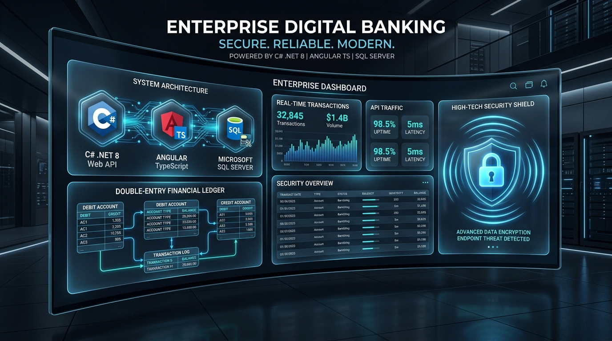

1. Problem Statement & Objectives
Modern banking backends require absolute financial integrity. Unhandled concurrency in HTTP transfers can lead to race conditions, double debits, and balance corruption.
- Concurrency Control: Enforce strict row-level locks (`UPDLOCK`, `HOLDLOCK`) in SQL Server during fund transfers.
- Idempotent Operations: Prevent network retry debits via `uniqueidentifier` idempotency keys.
- Reactive UX: Deliver an asynchronous, reactive UI using Angular, RxJS, and Angular Material.
2. 3-Tier Enterprise Architecture
Decoupled multi-tier system structure ensuring high maintainability and security separation:
3. Technology Stack Breakdown
4. SSMS Financial Ledger Engine
Account balances in SQL Server are derived dynamically from immutable ledger journal rows (`Banking.LedgerEntries`) rather than direct balance column mutations.
-
Transactional Stored Procedure: Transfers execute via
Banking.usp_PostCustomerTransferunder explicit SQL transaction isolation. -
Row-Locking Strategy: Acquires
UPDLOCK, HOLDLOCKon involved account rows in deterministic order to eliminate deadlocks. -
High-Precision Currency: Monetary fields defined as
decimal(19,4)preventing floating-point rounding errors.
EXEC Banking.usp_PostCustomerTransfer
@FromAccountId = @FromId,
@ToAccountId = @ToId,
@Amount = 1250.00,
@IdempotencyKey= @KeyUUID,
@TransferId = @TransferId OUTPUT;
5. C# .NET 10 Backend & Security
The C# backend exposes RESTful endpoints with ASP.NET Core middleware for authentication, authorization, and transactional logging.
- ASP.NET Core Identity & JWT: Secure authentication pipeline utilizing short-lived Bearer tokens and HttpOnly refresh cookies.
-
Transactional Outbox: Writes email notification payloads to
Integration.OutboxMessagesinside the primary DB transaction. - C# DTO & Model Validation: Strong type safety using C# records, FluentValidation, and custom error filters.
[HttpPost("transfer")]
[Authorize(Roles = "Customer")]
public async Task<IActionResult> PostTransfer([FromBody] TransferRequestDto dto)
{
var result = await _transferService.ExecuteTransferAsync(dto);
return Ok(result);
}
6. Angular Client Architecture
Front-end client engineered with modular Angular architecture, reactive data flows, and enterprise state management.
- RxJS State Management: Observables manage live balance updates, transfer progress, and user session states.
- HTTP Interceptors: Automatically attaches JWT Bearer authorization headers and intercepts 401/403 security errors.
- Angular Reactive Forms: Custom validators for IBAN, account numbers, and amount inputs.
7. Empirical Benchmarks & Results
Validated under SSMS concurrency testing with 1,000 parallel transactions:
8. Conclusion & Future Directions
The YONO Bank system demonstrates a robust, enterprise-grade architecture leveraging C# .NET 10, Angular, and SQL Server (SSMS) for zero-loss financial transactions.
- SQL Server Temporal Tables: Enabling point-in-time historical audit querying across all ledger accounts.
- Angular Micro-Frontends: Decomposing administrative and customer banking portals into independent Angular modules.